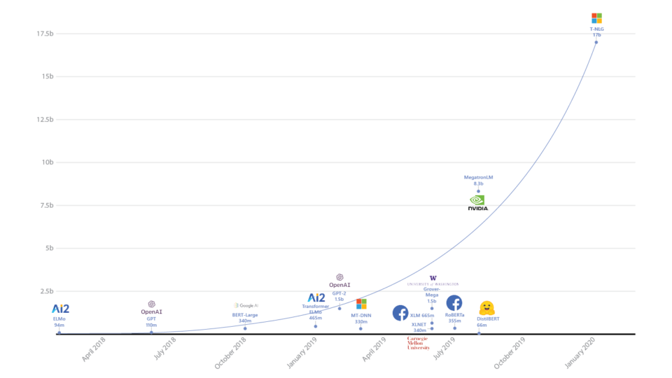

This essay will attempt to dissolve human psychology and its impact within cybersecurity. Deciphering how understanding human behaviour assists in developing, possibly pointing out repetitive patterns in order to solve criminal cases. From the repetitive human actions someone may convey during an interview there is evidence AI can assist within the criminal field.
As the world of technology continues to develop and adapt to human requirements; it is evident that a specific field–Cybersecurity– must be constantly updated and adapted in order to keep up with new and constant threats to personal information and devices. With every new antimalware update, there is someone with malicious intentions, learning how to bypass and eventually making successful interceptions causing data leaks and breaches endangering many. Therefore, it could be proposed that making an AI with an automated antimalware algorithm in which grows and adapts with every new threat, would assist in quicker response times and less human intervention. CyberSecurity and what it brings such as penetration testing and white hat hacking all contribute to reinforcing an organisations defences, as it must protect itself against malicious attacks as most times, private and sensitive data is stored under these organisations. However, just as fast as a company’s defences respond, so do the attackers with an alternative method to infiltrate a system. Therefore, with the use of AI and its potential to grow and develop; there are ways to limit and annihilate crime; both in criminal interviews and online scams.
Key features of artificial intelligence is its ability to learn through observation and essentially trial and error. In order to understand the limits and possibilities of artificial intelligence is through understanding what machine learning is. Consisting of algorithms, it is able to perform tasks without having to be directly programmed. However, there is another field in which vastly increases the landscape of AI and its extent. The advancements from conventional machine-learning in which techniques were extremely limited; processing natural data in their raw form. In order for a program to identify specific images, it must learn what certain things or common visuals will be under a certain category. As it trains, the machine would be shown an image, it must produce an output in the form of vectors– this is a very brief example of Supervised learning. Overall, this research and development is mainly consistent with Ai being able to identify patterns, this method of thinking is similar to how humans first learn as well– pattern recognition and the ability of figuring out patterns is essential for human development and learning. This graph shows the growth of parameters in Deep Learning-based language models:  This graph presenting that the more advance forms of AI such as chatGPT have more parameters than those with more limited usage. AI advances through utilising large data sets, this is important to note especially with how it is used for predictive modelling
A variety of websites utilise a sort of testing known as ‘A/B testing’(Custers and Fosch-Villaronga, 2022) , this is known as a sort of optimisation in which a few visitors are presented with screen A, whilst others B; the difference between these two portrayals would be a difference in colour, something minor and not so noticeable. However, the true intention of this test is to see which version delivers better results. This process is repeated until a final version is chosen; intended to determine the best result.Phishing schemes done by criminals run in the same way, developing messages and emails until it is optimised well enough to scam with little to no issue. Another use of AI would be creating deep fakes and AI-generated images, this has already occurred in political media such as Donald Trump supporters using this software to create and share an image of black voters to persuade African Americans to be in support of Republican vote (Spring, 2024). AI can be used for propaganda, fuelling an environment for criminal activity to become more convincing in their scams. This could be from generating images of a holiday abroad to propaganda convincing a victim to pay into a fund. Regardless, AI is a tool with little to no restrictions; it is something that must be monitored and controlled under strict laws and regulations. Utilising data analysis of trends and frequent occurrences– technology can formulate a visual representation in which is called crime heat maps(Custers and Fosch-Villaronga, 2022). Dense spots that are filled with crime can be policed more often, or invested into their police institution of that general area, compared to an area with less. AI can create predictive models in order to witness the general trend over the coming years, a useful tool with the ability to give law enforcements a greater idea of how to develop. Within detective cases AI could be used to fill inn the gaps of a criminal case, most cases have a general trend and similarities most times, therefore if an AI is fed information of a case, detectives are unable to resolve(or not enough time to) it could be used to fill in missing information. This sort of system could deal with petty crimes; neuroimaging data-As it is a study of the human psychology using MRI scanning(Poldrack et al., 2018)- could be used in order to know who is most likely to commit a crime, what their habits are with the most likely way they would go about doing things.
In conclusion, AI can utilise observation and processing for criminal cases; although AI and its potentials can be used by criminals, it is the reason to why the CyberSecurity field exists. Developing AI for predicting areas in requirement for policing, to formulating predictions and filling in gaps for detective work. There is still a wells way to go; however, its potential is always developing and reshaping views of how much potential there is for the future of security.
Rosset, C. (2020). Turing-NLG: A 17-billion-parameter language model by Microsoft. [online] Microsoft Research. Available at: https://www.microsoft.com/en-us/research/blog/turing-nlg-a-17-billion-parameter-language-model-by-microsoft/
Custers, B.H.M. (2022) AI in Criminal Law: An Overview of AI Applications in Substantive and Procedural Criminal Law, in: B.H.M. Custers & E. Fosch Villaronga (eds.) Law and Artificial Intelligence, Heidelberg: Springer, p. 205-223.
Spring, M. (2024). Trump supporters target black voters with faked AI images. BBC News. [online] 4 Mar. Available at: https://www.bbc.co.uk/news/world-us-canada-68440150.
Poldrack, R.A., Monahan, J., Imrey, P.B., Reyna, V., Raichle, M.E., Faigman, D. and Buckholtz, J.W. (2018). Predicting Violent Behavior: What Can Neuroscience Add? Trends in Cognitive Sciences, 22(2), pp.111–123. doi:https://doi.org/10.1016/j.tics.2017.11.003.